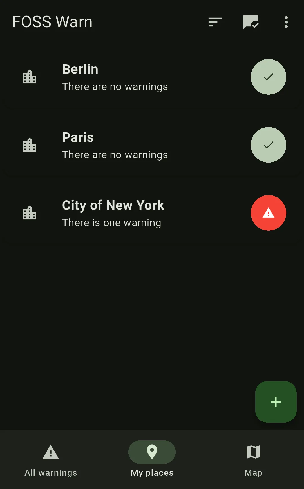

Push notifications
Near real-time alerts delivered with UnifiedPush — an open, battery-friendly alternative to proprietary push.
FOSS Warn keeps you informed about floods, storms, tsunamis and other emergencies — aggregating official alert feeds from over 100 countries into one clean, privacy-respecting app.
FOSS Warn is built on the FOSS Public Alert Server, a joint project of KDE and the FOSS Warn team that aggregates over 100 official CAP alert sources worldwide.
Subscribe to the places you care about — your home, work, a holiday destination — and FOSS Warn will notify you the moment an emergency alert is issued there. No account, no tracking, no proprietary cloud.

FOSS Warn packs a lot into a small, fast app.
Near real-time alerts delivered with UnifiedPush — an open, battery-friendly alternative to proprietary push.
Alerts are shown on a map, so you always know exactly where a warning applies.
Choose the severity and alert categories you want to hear about — globally or per category.
Optionally receive alerts for your current location — it automatically subscribes as you move.
Store past alerts locally on your device so you can review warnings even after they expire.
A built-in diagnostic walks through your whole notification chain so you know it actually works.
Choose the geographic areas you care about or enable location tracking.
The FOSS Public Alert Server watches official feeds for those areas.
An alert fires and FOSS Warn wakes up to notify you instantly.
Filter by severity, archive warnings, and follow official instructions.
A quick look at FOSS Warn in action.
Swipe to browse on mobile — tap an image to view it full size.
FOSS Warn runs on Android as a fully-featured mobile app, and offers an experimental Linux desktop build for ARM and x86 devices.
FOSS Warn is built around free, open infrastructure. Notifications use UnifiedPush rather than Google's proprietary push service, and your alert subscriptions go to an open server you can even self-host.
FOSS Warn is provided without warranty. It can never guarantee that all warnings are displayed at all times. Do not rely on this app alone — always follow the instructions of local authorities and use other warning sources.
FOSS Warn is developed by a very small team — and every contribution counts. Pick the way that fits you.
FOSS Warn is built with Flutter and Dart. Fix issues, add features, or help with our project board.
View the project board →Help bring FOSS Warn to more people around the world by contributing translations on Weblate.
Start translating →Report bugs, suggest ideas, and share your experience so we know what to improve next.
Open an issue →Follow and share FOSS Warn on Mastodon, join our Matrix space, or tell your local community.
Follow us →Developed by a small, friendly team. If you're familiar with Flutter and Dart and would like to fix or implement issues, we'd love to hear from you — by email or via Mastodon.
Free forever. Open source. Available now for Android and Linux.
This project was funded through the NGI0 Core Fund, a fund established by NLnet with financial support from the European Commission's Next Generation Internet programme.